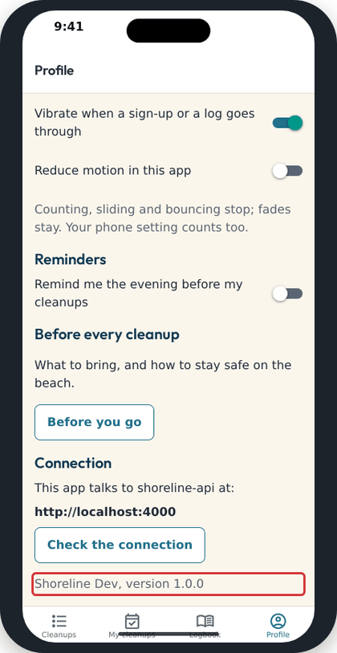

Session 22: Performance, Debugging and App Config
How to teach Session 22: turn "it feels slow" and "it broke" into numbers and facts (the toolbox, what the React Compiler already does, two threads, a bundle 6% smaller on Android, a five-step debugging method that ends with a test), then give Shoreline Crew its own label: a typed app.config.ts with three variants chosen by APP_VARIANT, a guard against plain http in production, a key that stays out of the code, and the introspect audit of what a build will ask the phone for.
How to Use This Guide
- Same rhythm for both lessons: frame (the goal and one mental model) → live demo (you type, they follow) → guided lab (a kit lab: new practice on the lesson's ideas, never the lesson's own project) → start the lesson's own project. The lesson exercises, quiz and journal are homework.
- Every command below was run to produce the output printed under it, in a learner's terminal (Node 24) on copies of the course app exactly as a learner has it before Lesson 8.4, after it, and after Lesson 9.1. Where the lesson shows the same command, the kit's output is the lesson's (trimmed the same way); bundle file names carry a content hash that differs on every machine, shown here as
entry-….hbc. - No phone was used to make this kit. Session 22 is the most terminal-heavy session of the course, which helps: the bundle, the debugging method, the config and introspect all run in a terminal and in Jest. What only a phone shows (React Native DevTools connected to Expo Go, the performance monitor's two frame rates, a build's name, icon and permission questions) is described the way the lessons describe it, from React Native's and Expo's documentation. Have your phone with Expo Go ready to show j and Shift+M if you can.
- Commands that need the network or change installed packages (
npx expo install --dev expo-atlas,npm uninstall,npx expo install expo-build-properties,npx expo-doctor) are not run in the room: learners do them at home, and the kit quotes the lesson's cards for them. Labs live inlabs/module-22/:starter/folders andTASKS.mdare handouts;solution/folders are yours until the session is over. - Teal blocks are hands-on, amber blocks are watch-outs. Lesson codes (8.4, 9.1) match the course site:
lesson_31.htmlandlesson_32.html.
The lesson pages estimate 145 + 145 = 290 minutes for a learner working alone; the room has 150 after the warm-up, the break and the wrap-up. Both lessons are full of tables (renders per keystroke, bytes per package, variants, settings, native settings) that are tempting to read aloud. Do not: the tables are homework reading. The room's time goes to three habits only a demo and a lab teach: read the error from the top, reproduce with a test before you fix, and ask Expo what it sees (npx expo config). Every block below is built around one of them.
Before the Session
- ☐ Run the kit check once:
python3 labs/check_labs.py module-22from this kit's folder (17 runs, about two minutes: the 8.4 starter fails to load exactly as declared, the solution's Task 2 test fails on the starter's code (it is a test of that bug), the 9.1 starter fails all six tests and tsc names the misspelled key, and the solution passes its tests, the type check, lint and five runs ofnpx expo config). - ☐ Projector machine: a copy of
lesson-31-start(the code as Lesson 8.3 left it) withnpm cidone, for the 8.4 demo, and a copy oflesson-32-startfor the 9.1 demo (both from the course downloads; each has a README). Runnpx expo export --platform androidonce in each before class: the first export of a copy is slow. Havelesson-31-endandlesson-32-endready to show the finished files. Two terminals at 18 pt or larger;lesson_31.htmlandlesson_32.htmlopen in tabs for the tables, the Atlas screenshot and the cards. - ☐ Your phone (optional, worth it): Expo Go with Shoreline Crew open on the same Wi-Fi, so you can press j and Shift+M for real after the honest no-phone demo. If the network fights you, skip it: the lesson's own outputs were made without a phone too.
- ☐ Board, before learners arrive: the five steps (reproduce · read the error · narrow it down · fix one thing · keep a test that fails without the fix); two threads (JS: your components, hooks, handlers / UI: layout, drawing, scrolling, worklets); and for 9.1 the readers of the config (Expo CLI and Metro · Expo Go: the public config only · prebuild · your build).
- ☐ Tell learners in advance (the Session 21 bring list): 9.1's project installs one package (
npx expo install expo-build-properties) and 8.4's removes three; both need the network. Lesson 9.2 (Session 23) asks for a free Expo account: optional, never needed to pass.
| Symptom | Cause | Fix |
|---|---|---|
Debug: No compatible apps connected, React Native DevTools can only be used with Hermes. | j pressed with only the web preview open | Open the app in Expo Go on a phone (or an emulator) first; for the web preview, the browser's DevTools and React Developer Tools. |
EXPO_ATLAS=true npx expo export keeps running npm install | expo-atlas not installed yet: the CLI tries to install it itself (measured: a loop) | Ctrl+C; npx expo install --dev expo-atlas first, then the export again. |
error TS2307: Cannot find module '@expo/ui/...' | A file still imports a package that was removed | Search src for the name and npm ls <name> before removing; put the package back or remove the import. |
Test suite failed to run / handleSubscription.remove is not a function | The screen imports mutations → reminders → expo-notifications, which cannot load in Jest | jest.mock('@/notifications/reminders', () => ({ updateReminders: jest.fn() })), with a factory. |
Cannot automatically write to dynamic config at: app.config.ts, exit code 1 | npx expo install of a package with a config plugin after app.json is gone | Add the plugin entry it prints to app.config.ts by hand; check with introspect. Install expo-build-properties in Step 1, while app.json exists. |
Error reading Expo config at …app.config.ts + your own message | A misspelled APP_VARIANT, or production with an http address | Read the first message line: development, preview or production exactly; an https:// EXPO_PUBLIC_API_URL for production. |
error TS2561: … Did you mean to write 'bundleIdentifier'? | A misspelled key in app.config.ts | Fix the key; run npx tsc --noEmit after every config change. |
| APP_VARIANT or .env.local changed, nothing changed | Expo reads both when a command starts | Stop Metro and start it again; for EXPO_PUBLIC_ values, npx expo start --clear. |
npx expo-doctor: 19/20, duplicate expo-server | expo-atlas (Lesson 8.4) brings an older expo-server | The lesson's overrides entry in package.json, then npm install: 20/20. |
Session 22 Agenda (3 hours)
| Clock | Minutes | Segment | What happens |
|---|---|---|---|
| 0:00 | 10 | Warm-up: Lesson 8.3 retrieval | Three questions on screen tests: where userEvent comes from, findBy versus getBy, and what a Maestro flow can test that Jest cannot. |
| 0:10 | 10 | 8.4 Frame and mental model | Measure, then fix: the tide gauge before the seawall; the toolbox (j, Shift+M, the browser's DevTools); two threads, two frame rates. |
| 0:20 | 20 | 8.4 Live demo | j with no phone, the bundle before and after (2238 → 2084 modules, 5.9 → 5.5 MB), then the method on the vanished cleanup: three runs of one test file. |
| 0:40 | 20 | 8.4 Guided lab | `labs/module-22/l8_4-performance-and-debugging/starter`: a test file that cannot load, a bug reproduced by a test first, a listener that outlives its screen. |
| 1:00 | 20 | 8.4 Start the lesson project | Step 5 on their own copy: the test file, the two failures read from the top, the one-thing fix, the passing run. Steps 1 to 4 and 6 go home. |
| 1:20 | 10 | Break | Leave the five-step method and the two threads on the board. |
| 1:30 | 10 | 9.1 Frame and mental model | The field kit's label: who reads the config (Expo CLI, Expo Go, prebuild, the build); three bags, one label maker (APP_VARIANT). |
| 1:40 | 20 | 9.1 Live demo | What Expo sees, the wrapper, three variants, a misspelled variant and the https guard, a typo tsc names, the introspect audit. |
| 2:00 | 25 | 9.1 Guided lab | `labs/module-22/l9_1-app-config-and-environments/starter`: Shoreline Lookout's app.config.ts: three variants, the typo, the guard, a scheme per variant, the key from the environment. |
| 2:25 | 25 | 9.1 Start the lesson project | Steps 1 to 3: read the public config, the wrapper, the whole app.config.ts, app.json deleted, the three variants. Steps 4 to 7 go home. |
| 2:50 | 10 | Wrap-up | Exit ticket (3 questions), homework, bring list for Session 23 (a free Expo account, optional). |
| Total | 180 | Ends at 3:00. |
In the room. Lesson 8.4 gets 70 minutes and Lesson 9.1 80, out of 145 + 145 minutes of lesson. Both keep their full shape (model, demo, lab, project start). Lesson 8.4's project starts with Step 5, the debugging method, because it needs nothing installed and no phone; its measuring steps go home. Lesson 9.1's project starts at Step 1 and gets as far as the three variants.
Goes home (about 2 to 3 hours). Lesson 8.4's Steps 1 to 4 and 6 (the toolbox on a phone, render counts with the compiler on and off in the web preview, Expo Atlas, the three packages and Zod's languages, the whole suite and the performance notes) and anything of Step 5 not finished; Lesson 9.1's Steps 4 to 7 (the https guard, the Maps key in .env.example, the introspect audit, the version line on Profile, expo-doctor and the overrides entry); both labs' remaining tasks; each lesson's Hands-on Exercises; both Quick Quizzes; both journal entries; both "Before the Next Lesson" lists (9.1's includes a free Expo account for Lesson 9.2: optional).
Protect, in this order: the 8.4 "read the error" and "the failure that matches the report" steps (the method in two runs); the 9.1 "three variants" and "keep plain http out of production" steps; both guided labs' first task. Cut first: the 8.4 "who depends on them" step and the 9.1 introspect step (both are in the lessons and in the homework), then the warm-up's third question.
Opening Segment
Warm-up: Lesson 8.3 Retrieval
10 min- Where does a screen test import
userEventfrom, and what happens if it comes fromexpo-router/testing-library? Answer: from@testing-library/react-native; Expo Router's export is type-only, and tsc reports TS1362 (Lesson 8.3, Common Mistakes). - A screen shows a cleanup only after the API answers.
getByTextorfindByText, and why? Answer:findByText: it waits (and retries) for the answer;getByTextlooks once, now. - Name one thing a Maestro flow on a phone can check that Jest cannot. Answer: anything native: the real keyboard, the native Switch, the system's permission question, the app as installed (Lesson 8.3; the flow is docs-based in the course).
"In Session 21 you made the tests that keep Shoreline Crew correct. Today two different questions: is it fast, and when it breaks, how do you find out why? Then the app gets its own name, before Session 23 builds it." Ask who wrote down the fast-scroll note from Lesson 8.3's end: it is Lesson 8.4's starting point.
Lesson Plans
Performance and Debugging
70 min- Open React Native DevTools with j, find the Expo CLI's dev tools menu, and say which tool answers which question on a phone and in the web preview
- Explain why a component renders, measure renders with React DevTools' Profiler, and decide from numbers whether memoization is needed with the React Compiler on
- Describe the JS thread and the UI thread, frames, release versus development builds, and the common causes of memory leaks in a React Native app
- Measure what the app's bundle carries with npx expo export and Expo Atlas, and shrink it where the numbers say it pays
- Debug with a method: reproduce, read the error, narrow it down, fix, and add a test that fails without the fix
| 10m | Frame: measure, then fix; the toolbox; why a screen renders and what the compiler does; two threads |
| 20m | Live demo: j with no phone, the bundle before and after, the method on the vanished cleanup |
| 20m | Guided lab: l8_4-performance-and-debugging/starter, Tasks 1 and 2 in pairs |
| 20m | Start the lesson project: Step 5, the vanished cleanup with the method |
From the lesson: "A town does not build a seawall because the beach looks high today; it reads the tide gauge for a season first, and then builds where the water actually comes over. Optimizing without a measurement is building seawalls by feel: expensive, in the wrong place, and sometimes it makes the next storm worse." Then the rule it gives: measure, change one thing, measure again.
Then the numbers that make the rule concrete (the lesson's table, measured in the web preview while typing otter into Search): with the React Compiler on, about 46 to 62 components render per keystroke in 3 to 4 ms; with it off, about 262 to 531 in 10 to 21 ms. "The compiler is already doing the useMemo work. So memo only where a measurement says so."
Then two threads: the JS thread runs your components, hooks and handlers; the UI thread lays out, draws and scrolls. The performance monitor shows a frame rate for each; a frame has 16.7 ms at 60 Hz. Count renders anywhere; judge speed in production mode (npx expo start --no-dev --minify, or a build) on a real, preferably modest, phone. Write count anywhere, judge on a phone under the method.
In the 8.4 copy on the projector. Ask for a prediction before every run: "how many modules?", "will the test even run?", "which line fails?".
- The toolbox, honestly (4m). "Two keys open today's tools." In
shoreline-crew(the code as Lesson 8.3 left it), start Metro and press j with only the web preview, as the lesson does. This is the kit's run, the QR code and the folder left out:npx expo start
› Using Expo Go › Press j │ open debugger › Press r │ reload app › Press m │ toggle menu › shift+m │ more tools Logs for your project will appear below. Press Ctrl+C to exit. Debug: No compatible apps connected, React Native DevTools can only be used with Hermes. Learn more: https://docs.expo.dev/guides/using-hermes/
Say what it means: React Native DevTools debugs JavaScript running in Hermes, on a phone or an emulator; the web preview runs in the browser's engine, so its tools are the browser's DevTools and the React Developer Tools extension. If you have your phone with Expo Go, open the project and press j again: the lesson's panels (Console, Sources, Components, Profiler, Memory) and Shift+M's performance monitor. The course could not run a real phone while it was checked: the DevTools window and the overlay are described from React Native's and Expo's documentation, exactly as the lesson says. - What the bundle carries, before (4m). "Every check since Lesson 1.2 has exported the app. Today we read the numbers." Export the Android bundle (the kit's run, the asset list left out):
npx expo export --platform android
React Compiler enabled Android Bundled …ms node_modules/expo-router/entry.js (2238 modules) › android bundles (1): _expo/static/js/android/entry-….hbc (5.9MB)
Write the "before" on the board: 2238 modules, 5.9MB. Then the lesson's table of minified bytes per package (reanimated, react-native, zod with 275 KB of messages in 40 languages, expo-router, …, Shoreline Crew's own src only 140 KB, @expo/ui 78 KB for nothing) and the Atlas screenshot. Atlas itself (npx expo install --dev expo-atlas,EXPO_ATLAS=true npx expo export) is Step 3 at home: install it first, as the lesson says, or the export tries to install it in a loop. - Who depends on them (2m). Before removing anything: who uses it?
npm ls expo-glass-effect expo-device expo-web-browser @expo/ui
shoreline-crew@1.0.0 ~/shoreline/shoreline-crew ├── @expo/ui@58.0.28 ├── expo-device@58.0.5 ├── expo-glass-effect@58.0.5 ├─┬ expo-router@58.0.31 │ ├── @expo/ui@58.0.28 deduped │ └── expo-glass-effect@58.0.5 deduped └── expo-web-browser@58.0.8
Expo Router needs expo-glass-effect (it stays) and uses @expo/ui only optionally, on Android. Nothing uses expo-device or expo-web-browser. The lesson removes those three and resolves Zod's languages to an empty module in metro.config.js. - After (3m). The same export with the lesson's finished code, then iOS:
npx expo export --platform android --clear npx expo export --platform ios
React Compiler enabled Android Bundled …ms node_modules/expo-router/entry.js (2084 modules) › android bundles (1): _expo/static/js/android/entry-….hbc (5.5MB) React Compiler enabled iOS Bundled …ms node_modules/expo-router/entry.js (2081 modules) › ios bundles (1): _expo/static/js/ios/entry-….hbc (5.4MB)
154 fewer modules to run at every start, 5.9MB → 5.5MB on Android. The iOS bundle did not change when @expo/ui went (Expo Router loads it on Android only): only Zod's languages moved it. Measure each platform; never assume. - Read the error (3m). "The report: I checked in at the Tide Pool cleanup, and now it's gone from My cleanups." Reproduce it automatically: type the lesson's
my-cleanups.test.tsxWITHOUT itsjest.mock()line and run it:npm test -- --watchAll=false src/test/screens/my-cleanups.test.tsx
FAIL src/test/screens/my-cleanups.test.tsx ● Test suite failed to run TypeError: handleSubscription.remove is not a function Test Suites: 1 failed, 1 total Tests: 0 totalNo test ran. Read the stack from the bottom up (it is in the lesson's Common Mistakes): the test, my-cleanups.tsx, mutations.ts, reminders.ts, expo-notifications. That is the setup talking, not the bug. Add thejest.mock('@/notifications/reminders', ...)line with its comment. - The failure that matches the report (2m). Run it again:
npm test -- --watchAll=false src/test/screens/my-cleanups.test.tsx
FAIL src/test/screens/my-cleanups.test.tsx ✓ lists the cleanups Theo signed up for, each with a Cancel button ✕ keeps today's cleanup after check-in, marked Checked in, with nothing to cancel ● keeps today's cleanup after check-in, marked Checked in, with nothing to cancel Unable to find an element with text: Tide Pool Morning Cleanup Tests: 1 failed, 1 passed, 2 total
Now it fails for the volunteer's reason. Narrow it down out loud: the API's/api/me/signupsstill has the sign-up with status attended (the browser's Network tab), so the bug is in what the screen keeps: comingUp keeps only confirmed and waitlisted. - Fix one thing, keep the test (2m). The lesson's fix (the filter, the badge, no Cancel for attended):
shoreline-crew/src/app/(tabs)/my-cleanups.tsx
const comingUp = signups.data .filter( ({ status, event }) => ((status === 'confirmed' || status === 'waitlisted') && event.date >= today) || (status === 'attended' && event.date === today), ) .reverse();
npm test -- --watchAll=false src/test/screens/my-cleanups.test.tsx
PASS src/test/screens/my-cleanups.test.tsx ✓ lists the cleanups Theo signed up for, each with a Cancel button ✓ keeps today's cleanup after check-in, marked Checked in, with nothing to cancel Tests: 2 passed, 2 total
The test failed without the fix and passes with it: it is a test of THIS bug. The whole suite is now 47 tests in 15 files.
- Fixing before reproducing. A learner reads the filter, changes it, and calls it done. Coach: "Show me the test that failed before your change." A test written after the fix may pass for an unrelated reason (the lesson's quiz Q5).
- Memoizing by default.
useCallbackon every handler "for performance". Coach: "Which measurement says this component renders too often?" With the compiler on, there is usually none (Self-check Q3). - Judging speed in the web preview. "It is fast on my laptop." Coach: "Count renders here; time them on a phone in production mode." A desktop browser is many times faster than a phone, and react-native-web draws with the browser.
Folder: learners work in labs/module-22/l8_4-performance-and-debugging/starter/ (task sheet labs/module-22/l8_4-performance-and-debugging/TASKS.md); your reference is labs/module-22/l8_4-performance-and-debugging/solution/. A small new screen for crew leaders, SiteSearch (a beach search with a low-tide reminder; the six beaches are a real answer of GET /api/sites), with the lesson's method on code they have not seen. Jest renders it headless; nothing to install, no API.
- Run it as shipped first (3m). On the projector:
npm test -- src/SiteSearch.test.tsx. No test runs. Read the stack from the bottom up together (the kit's run, the frames that are the lab's own files):
● Test suite failed to run TypeError: handleSubscription.remove is not a function at Object.remove (../../../node_modules/expo-notifications/build/NotificationsHandler.ts:94:24) at Object.setNotificationHandler (src/reminders.ts:5:15) at Object.require (src/SiteSearch.tsx:6:1) at Object.require (src/SiteSearch.test.tsx:4:1)
- Task 1 in pairs (5m): the stand-in,
jest.mock('./reminders', () => ({ remindMe: jest.fn(async () => 'reminder-1') })). Circulate for learners who editreminders.tsinstead ("is the reminder what these tests are about?") or mock without a factory (the same error comes back). Then three pass and one saysTODO 2. - Task 2 (10m): the report "I typed cove and nothing came up". Insist on the order: the test first, watch it fail, then the fix. The kit ran the solution's test on the starter's code; it fails for the volunteer's reason:
● Task 2: finds a beach whatever the case of the letters typed Unable to find an element with text: Driftwood Cove
- Expected when both are done:
npm test -- src/SiteSearch.test.tsxsaysTests: 4 passed, 4 total. Debrief (2m): "What would have happened if you had fixedmatchingSitesfirst?" (no proof the test catches this bug). Task 3 (a listener withoutremove(): the leak the lesson names first) goes home, or to fast finishers. All done, the solution's run ends:
PASS src/useOnForeground.test.tsx PASS src/SiteSearch.test.tsx Tests: 6 passed, 6 total
The lesson project is Measure, Trim and Fix Shoreline Crew, six steps. In the room, Step 5 (20 minutes): it needs no phone, no install and no browser extension, and the demo just showed every run.
- Step 5.1: sign in as Theo in the web preview, check in at today's cleanup with 6544, see it vanish; then create
src/test/screens/my-cleanups.test.tsxfrom the lesson, WITHOUT thejest.mock()line. - Steps 5.2 to 5.5: the suite that cannot load, the mock, the failure that matches the report, the fix in
my-cleanups.tsx, the passing run. Done in the room =Tests: 2 passed, 2 totalfor the file, and the fix checked by hand once. - Goes home: Step 1 (j and Shift+M on a phone, or the web half), Step 2 (renders with the compiler on and off: put
"reactCompiler": trueback and restart with--clear), Steps 3 and 4 (Atlas, the three packages, metro.config.js: the network is needed), Step 6 (47 tests, tsc, lint, the performance notes,--source-mapsonce). The finished code islesson-31-end.

Ask these out loud during the demo and the lab:
- What does j open, and what does it need? Answer: React Native DevTools, for an app running Hermes (Expo Go or a development build) connected to Metro.
- The JS frame rate drops while scrolling, the UI rate does not. Where do you look? Answer: at the JavaScript work of the rows, with the Profiler.
- Why did the iOS bundle not change when @expo/ui went? Answer: Expo Router loads it on Android only.
- Why write the test before the fix? Answer: a test that fails without the fix and passes with it proves it checks this bug, and it reproduces the report in a second.
Workbook self-check, items Q1 to Q6 (learners do them at the end of the block or at home).
Answers: Q1 B) Open the app in Expo Go on a phone (or an emulator) and press j again; for the web preview, use the browser's DevTools; Q2 jest.mock('@/notifications/reminders', () => ({ updateReminders: jest.fn() })): a stand-in for the app's own module at the edge of what the test is about; without a factory Jest loads the real module to copy its shape; Q3 A) Leave it: the compiler skipped it, and the measurement says it does not matter; Q4 C) The native side: big images being decoded, too many views, heavy shadows; Q5 D) A file of yours still imports the package: search src for its name and run npm ls with it before removing; Q6 B) In the screen's own logic: what My cleanups keeps from the sign-ups it receives. Full set with explanations in the Answer Key.
Support: pair learners who are unsure of reading stacks with a strong reader for the lab's Task 1: one reads each frame aloud from the bottom, the other says which file it is. For the project, the lesson's test file can be copied from lesson-31-end if typing it eats the time; the method is the point.
Stretch: Lab 8.4 Task 3 (the listener); the lesson's Exercise 3 (a test for Cancel with waitFor); the Bonus Challenge (production mode on the oldest phone available, a first performance budget).
App Config and Environments
80 min- Explain what the app config controls, who reads it (Expo Go, prebuild, your build) and how to see exactly what Expo sees with npx expo config
- Replace app.json with a typed app.config.ts and say what you gain and what tools can no longer do for you
- Define development, preview and production variants with their own names and app ids, chosen by APP_VARIANT
- Decide where each setting lives (EXPO_PUBLIC_ variables, the shell, .env.local, a build service's secrets) and keep secrets out of your code
- Explain why release builds refuse plain http, what that means for shoreline-api, and what a real app does instead
- Audit what a build asks the phone for: permission sentences, Face ID, push entitlement, notification icon and splash screen
| 10m | Frame: the field kit's label; who reads the config; app.json or app.config.ts; three variants |
| 20m | Live demo: what Expo sees, three variants, a misspelled variant, the https guard, a typo tsc names, introspect |
| 25m | Guided lab: l9_1-app-config-and-environments/starter, Tasks 1 and 2 |
| 25m | Start the lesson project: Steps 1 to 3 |
From the lesson: "Lesson 1.1 called the native modules a build carries its field kit. The app config is the label stitched on the bag: whose kit it is, which crew, what is inside, what it is allowed to carry through security. Expo Go is a borrowed bag with Expo's label already on it, which is why nothing you wrote on yours showed up so far." Then: "Today you write the label for three bags, one per crew: practice, testing, and the real cleanup. APP_VARIANT is the label maker."
Then the two facts the rest builds on: the config runs on your computer, never on the phone (Node evaluates it; from Lesson 9.2 the build server too), and the public config travels with the app (anything in it, plugin options included, is inside every build). Draw the lesson's diagram: shell and .env.local → app.config.ts in Node → the public config (Expo Go, Constants) and the native projects (your build's ids and icons).
Then the settings table in one line each: EXPO_PUBLIC_API_URL is in the bundle (not a secret); APP_VARIANT lives in the shell or the build profile; the Maps key lives in .env.local or the build service's secrets, without the EXPO_PUBLIC_ prefix, and is restricted because it ships in the Android app.
In the 9.1 copy on the projector (the code as Lesson 8.4 left it, with app.json), then the lesson's finished app.config.ts. Ask for a prediction before each run: "which name?", "which id?", "will it even start?".
- What Expo sees, and the wrapper (4m). "Expo Go has shown its own name, icon and words all course. Today Shoreline Crew gets its own label." With Lesson 8.4's code, create the lesson's small wrapper next to app.json and print the public config:
import type { ConfigContext, ExpoConfig } from 'expo/config'; // For a first look: Expo reads app.json, then hands it to this function as `config` export default ({ config }: ConfigContext): ExpoConfig => ({ ...config, name: 'Shoreline Dev', slug: 'shoreline-crew', });
npx expo config --type public
env: load .env.local env: export EXPO_PUBLIC_API_URL { name: 'Shoreline Dev', slug: 'shoreline-crew', version: '1.0.0', orientation: 'portrait', icon: './assets/images/icon.png', ... - Three variants (4m). Then the lesson's whole app.config.ts (show the top: the only part that differs between the three apps). No APP_VARIANT means development:
shoreline-crew/app.config.ts
const variants = { development: { name: 'Shoreline Dev', appId: 'com.example.shorelinecrew.dev' }, preview: { name: 'Shoreline Preview', appId: 'com.example.shorelinecrew.preview' }, production: { name: 'Shoreline Crew', appId: 'com.example.shorelinecrew' }, }; type Variant = keyof typeof variants; function isVariant(value: string): value is Variant { return Object.hasOwn(variants, value); } // APP_VARIANT picks the variant: set it in the shell, or (Lesson 9.2) per build profile in eas.json const variant = process.env.APP_VARIANT ?? 'development'; if (!isVariant(variant)) { throw new Error(`APP_VARIANT must be development, preview or production, not "${variant}".`); }
npx expo config --type public APP_VARIANT=preview npx expo config --type public
name: 'Shoreline Dev', usesCleartextTraffic: false bundleIdentifier: 'com.example.shorelinecrew.dev' package: 'com.example.shorelinecrew.dev', name: 'Shoreline Preview', usesCleartextTraffic: true bundleIdentifier: 'com.example.shorelinecrew.preview' package: 'com.example.shorelinecrew.preview',
Different names and ids, so all three sit side by side on one phone; cleartext only for preview. PowerShell learners set$env:APP_VARIANT = "preview"first and remove it afterwards. - A misspelled variant (2m). Make the likely mistake on purpose:
APP_VARIANT=prod npx expo config --type public
env: load .env.local env: export EXPO_PUBLIC_API_URL Error: Error reading Expo config at ~/shoreline/shoreline-crew/app.config.ts: APP_VARIANT must be development, preview or production, not "prod". Error: APP_VARIANT must be development, preview or production, not "prod". at Object.<anonymous> (~/shoreline/shoreline-crew/app.config.js:15:11)Your own message, from your own guard, before anything is built. The stack names app.config.js: Expo compiled the TypeScript file to run it. The lesson shows the same run as a screenshot. - Keep plain http out of production (3m). Ask for production with the development .env.local, then with an https address in the shell:
APP_VARIANT=production npx expo config --type public APP_VARIANT=production EXPO_PUBLIC_API_URL=https://crew-api.example.org npx expo config --type public
env: load .env.local env: export EXPO_PUBLIC_API_URL Error: Error reading Expo config at ~/shoreline/shoreline-crew/app.config.ts: A production build needs an https:// EXPO_PUBLIC_API_URL, not "http://localhost:4000". Error: A production build needs an https:// EXPO_PUBLIC_API_URL, not "http://localhost:4000". at Object.<anonymous> (~/shoreline/shoreline-crew/app.config.js:21:11) name: 'Shoreline Crew', usesCleartextTraffic: false bundleIdentifier: 'com.example.shorelinecrew' package: 'com.example.shorelinecrew',The guard read http://localhost:4000 from .env.local (Expo loads it before running the config). The shell beats .env.local, and then Expo prints noenv:lines. crew-api.example.org stands in for the https server a real team runs; the course API stays on your computer, so the course stops at the preview build. - A typo tsc names (2m). Misspell
bundleIdentifierin app.config.ts and run the type check:npx tsc --noEmit
app.config.ts:44:5 - error TS2561: Object literal may only specify known properties, but 'bundleIdentifer' does not exist in type 'IOS'. Did you mean to write 'bundleIdentifier'? 44 bundleIdentifer: variants[variant].appId, ~~~~~~~~~~~~~~~ node_modules/@expo/config-types/build/ExpoConfig.d.ts:209:5 209 ios?: IOS; ~~~ The expected type comes from property 'ios' which is declared here on type 'ExpoConfig' Found 1 error in app.config.ts:44The kit's run is the lesson's card. In app.json the same key would be ignored without a word. Undo:npx tsc --noEmitprints nothing again. - What a build would ask the phone for (5m). Introspect runs the config plugins in memory (almost a thousand lines: the kit's run had 977). Search for the lesson's items:
APP_VARIANT=preview npx expo config --type introspect
CFBundleDisplayName: 'Shoreline Preview', NSCameraUsageDescription: 'Shoreline Crew uses your camera to photograph the debris you collected at a cleanup.', NSLocationWhenInUseUsageDescription: "Shoreline Crew uses your location to show how far you are from a cleanup's meeting point.", entitlements: {}, package: 'com.example.shorelinecrew.preview' 'android:usesCleartextTraffic': 'true', 'android:name': 'com.google.firebase.messaging.default_notification_icon', 'android:resource': '@drawable/notification_icon'Shoreline Preview under the icon, Shoreline Crew's own camera and location sentences, no NSFaceIDUsageDescription (search for it: gone), no push entitlement, cleartext for preview, the white notification icon, and no Maps key line (no key yet: Android maps would stay empty). None of this shows in Expo Go; Lesson 9.2's development build shows it on a phone.
- Running
npx expo install expo-build-propertiesafter app.json is gone. The package installs, thenCannot automatically write to dynamic configand exit 1. Coach: "Read what it says to add"; the lesson installs it in Step 1 for this reason (lesson quiz Q4). - A real key in a committed file.
.env.example"so everyone has it". Coach: "Which files does Git track?" The fix is to replace the key in Google Cloud, not to delete the line (lesson quiz Q2; Self-check Q10). - Expecting Expo Go to show the new name and icon. Coach: "Who reads the native settings?" (prebuild, Lesson 9.2's build); Expo Go's project list shows only the config name. Introspect is today's check (Self-check Q12).
Folder: labs/module-22/l9_1-app-config-and-environments/starter/ with labs/module-22/l9_1-app-config-and-environments/TASKS.md; your reference is labs/module-22/l9_1-app-config-and-environments/solution/. A second app, Shoreline Lookout (a crew leader's beach-conditions app), whose app.config.ts is one fixed set of values: learners give it three variants (Lookout Dev, Lookout Preview, Shoreline Lookout), fix the key tsc names, add the https guard and a scheme per variant (the lesson's Common Questions idea), and read the Maps key from the environment. The tests load the config once per variant, as Expo does; npx expo config runs on it like on the course app.
- Run it as shipped (3m).
npm test: six failures. Thennpm run typecheck:
app.config.ts:19:5 - error TS2561: Object literal may only specify known properties, but 'pacakge' does not exist in type 'Android'. Did you mean to write 'package'? Found 1 error in app.config.ts:19
- Task 1 (12m): fix the key, then the variants object, the type guard and the default. Then
npx expo config --type publicand the preview variant; the kit's runs of the solution:
name: 'Lookout Dev',
scheme: 'shorelinelookout-dev',
bundleIdentifier: 'com.example.shorelinelookout.dev'
package: 'com.example.shorelinelookout.dev',
name: 'Lookout Preview',
scheme: 'shorelinelookout',
bundleIdentifier: 'com.example.shorelinelookout.preview'
package: 'com.example.shorelinelookout.preview',- Task 2 (8m): the guard and the scheme. The solution's runs with a misspelled variant and with production on plain http end with the config's own messages:
APP_VARIANT must be development, preview or production, not "Preview". A production build needs an https:// EXPO_PUBLIC_API_URL, not "http://lookout-api.example.org".
- Debrief (2m): "Why development as the default?" (a forgotten setting can never make the store app, and
npx expo startkeeps working). Task 3 (the key) and the introspect check go home. All done:
PASS src/config.test.ts ✓ Task 1: development by default: Lookout Dev, with the .dev id on both platforms ✓ Task 1: APP_VARIANT=preview gives Lookout Preview and the .preview id ✓ Task 1: a misspelled variant stops with a message that names it ✓ Task 2: production refuses plain http and accepts https ✓ Task 2: only development gets its own link scheme ✓ Task 3: the Maps key comes from ANDROID_GOOGLE_MAPS_API_KEY, never from the file Tests: 6 passed, 6 total
The lesson project is Shoreline Crew's App Config, seven steps. In the room, Steps 1 to 3 (25 minutes).
- Step 1:
npx expo config --type public(the reference), thennpx expo install expo-build-propertiesWHILE app.json still exists (the network is needed; a learner without it writes the plugin entry by hand later). - Step 2: the wrapper next to app.json (the name changes), then the whole app.config.ts from the lesson, the notification icon copied from
lesson-32-end,rm app.json,npx tsc --noEmit(prints nothing) andnpx expo lint(only Expo's twoenv:lines, the kit's run). - Step 3: the three variants with
npx expo config --type public, and APP_VARIANT=prod on purpose. Done in the room = Shoreline Dev / Shoreline Preview with their ids, and the misspelled variant stopped by your own message. - Goes home: Step 4 (production and https), Step 5 (the Maps key in
.env.example, a pretend key in.env.local, then deleted), Step 6 (the introspect audit), Step 7 (the version line on Profile, its test, the Maestro comment, expo-doctor and the overrides entry, 48 tests). The finished code islesson-32-end.

Ask these out loud during the demo and the lab:
- Who reads the icon and the permission sentences, and who does not? Answer: prebuild and your build; Expo Go does not (it uses only the public config).
- What does
npx expo config --type introspectshow? Answer: what the config plugins would write into the native projects, without creating them. - Why does each variant get its own id? Answer: a phone replaces an app with any build of the same id; three ids let the three sit side by side.
- Is EXPO_PUBLIC_API_URL a secret? Answer: no: it is written into the bundle; protection belongs on the server (https, sign-in).
Workbook self-check, items Q7 to Q12 (learners do them at the end of the block or at home).
Answers: Q7 C) The config's own guard refused a name it does not know; the variant is spelled production; Q8 An error: A production build needs an https:// EXPO_PUBLIC_API_URL, not "http://localhost:4000".: Expo loaded .env.local before it ran app.config.ts, and the guard refuses plain http for production; Q9 A) Nothing at once: Expo ignores an unknown key, and you find out when a build has no id; Q10 D) In .env.local (never committed) or the build service's secrets, as ANDROID_GOOGLE_MAPS_API_KEY, and restricted in Google Cloud; Q11 B) A preview build is a release build, which refuses plain http; this lets it reach shoreline-api on your Wi-Fi, and production uses https instead; Q12 C) Nothing is wrong: Expo Go is one app that opens many projects; check native settings with npx expo config --type introspect until Lesson 9.2's build. Full set with explanations in the Answer Key.
Support: learners who fall behind copying the long app.config.ts take it from lesson-32-end and spend the time on Step 3's runs instead; the variants and the errors are the learning, not the typing. For PowerShell users, write the three $env: lines on the board.
Stretch: Lab 9.1 Task 3 and the introspect check; the lesson's Exercise 2 (android.blockedPermissions for SYSTEM_ALERT_WINDOW); the Bonus Challenge (an icon per variant).
Closing
Put the three questions on the slide; learners answer in the workbook's Exit Ticket box or on a sticky note. Question 3's pile tells you how much of Session 23's warm-up goes back to variants.
- Put the five steps of the debugging method in order. Answer: reproduce, read the error, narrow it down, fix one thing, keep a test that fails without the fix.
- Name one thing in the bundle that Shoreline Crew carried for nothing, and how you found it. Answer: Zod's messages in 40 languages or @expo/ui; Expo Atlas, the export's numbers,
npm ls. npx expo startwith no APP_VARIANT: which name, which id, and why that default? Answer: Shoreline Dev, com.example.shorelinecrew.dev; a forgotten variant can never replace the real app.
- Finish both lesson projects. 8.4: Steps 1 to 4 and 6 (the phone half of Step 1 when a phone is at hand), with the performance notes. 9.1: Steps 4 to 7, every checklist item, and the commit (check that no key is in it).
- Lesson exercises. 8.4: Exercises 1 and 2; Exercise 3 is a stretch. 9.1: Exercises 1 and 2; Exercise 3 (a prebuild after a commit) is a stretch.
- Both Quick Quizzes on the lesson pages (answers are in the Answer Key).
- Labs: Lab 8.4 Task 3; Lab 9.1 Task 3 and the introspect check.
- Journal: both entries. The 9.1 prompt lists every setting of your own final-project idea that changes between your laptop and the store: bring it to Session 23.
- Before the Next Lesson (from 9.1): tsc, lint, the tests and expo-doctor once more, then commit; Lesson 9.2 suggests a free Expo account (optional: nothing in the course needs one to pass).
- The course folder with Shoreline Crew as Lesson 9.1 leaves it (
lesson-32-endif not): app.config.ts only, 48 tests passing,npx expo-doctor20/20. - Session 23 (Lesson 9.2) adds expo-dev-client and eas.json with a build profile per variant (each sets APP_VARIANT). A free Expo account is optional: learners without one follow the build steps as a reading and do everything local.
- The 9.1 journal list (your own app's names, ids and secrets), a phone with Expo Go if they have one, the workbook.
If You Run Long or Short
- Protect: the 8.4 "read the error" and "the failure that matches the report" steps; the 9.1 "three variants" and "keep plain http out of production" steps; both labs' Task 1.
- Cut first (saves 7m): the 8.4 "who depends on them" step and the 9.1 introspect step (homework Step 6).
- Cut second (saves 10m): the 8.4 project start (the demo did Step 5; learners do it at home from the lesson).
- Cut third (saves 10m): the 9.1 project's Step 3 in the room: stop after Step 2 (the file and app.json deleted).
- Lab 8.4 Task 3 for everyone: the listener, the cleanup, and where the leak would show on a phone (the performance monitor's memory number, heap snapshots).
- Lesson 9.1's Exercise 1 together: predict four
npx expo configruns, then run them (Preview with a capital P, http on production, https on preview). - Lesson 8.4's Exercise 3 live: a test for Cancel with
waitFor.